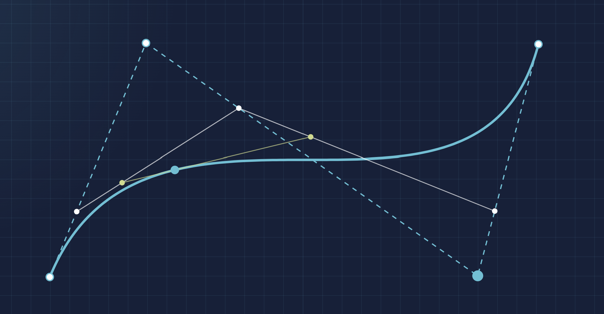
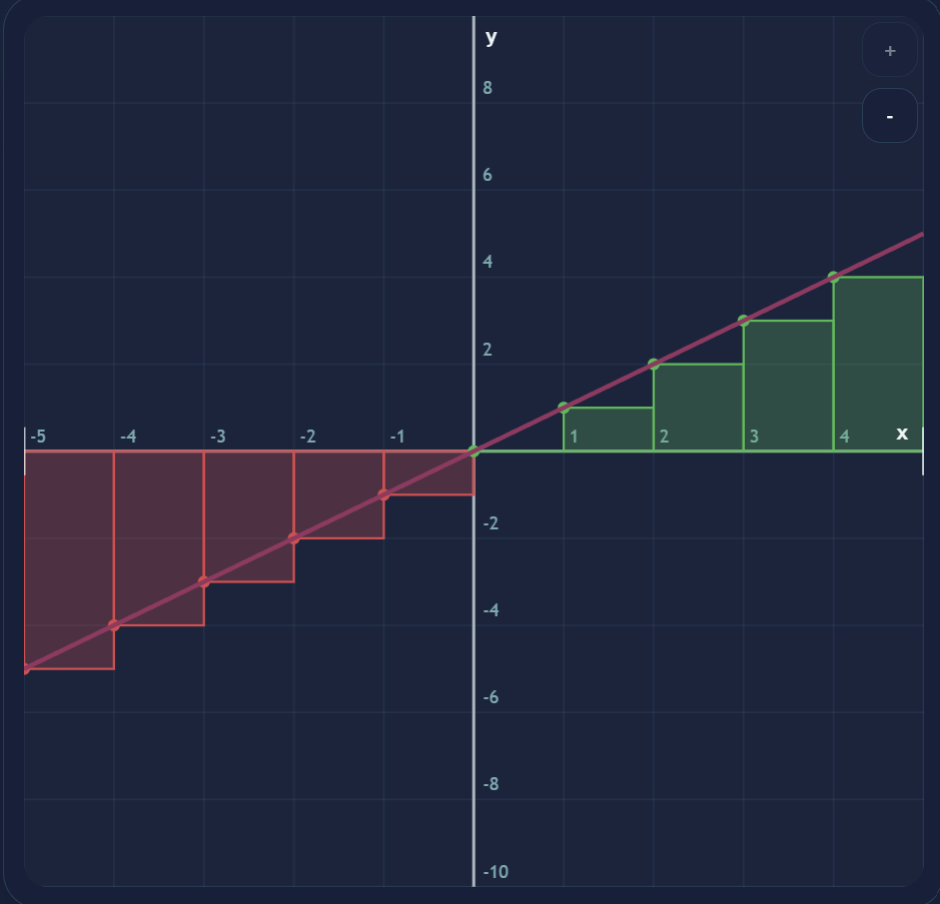
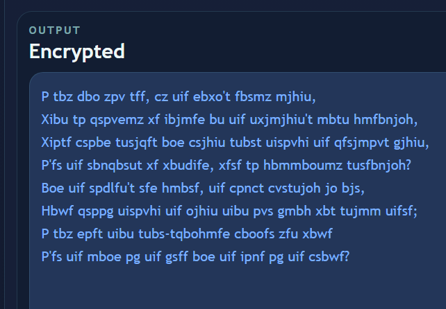
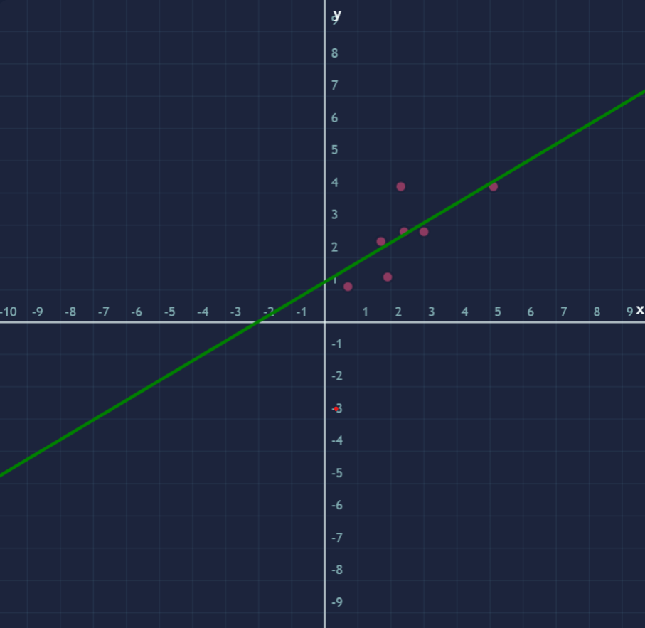

01
Bezier Curves
Manipulate control points and watch smooth parametric curves respond in real time.

Interactive visual math
A minimalist launchpad for interactive math experiments. Each project explores a different idea with its own visual accent so the collection feels connected without blending together.
Browse the projects below to jump into curves, statistical modeling, and area approximation. Everything stays left-aligned and easy to scan, with the visuals carrying the personality.
01
Manipulate control points and watch smooth parametric curves respond in real time.

02
Approximate area under a curve and see convergence as partitions increase.

03
Explore cipher ideas and encoding workflows through an interactive placeholder ready for the next buildout.

04
Compare fitted models and see how data trends turn into predictive curves.
